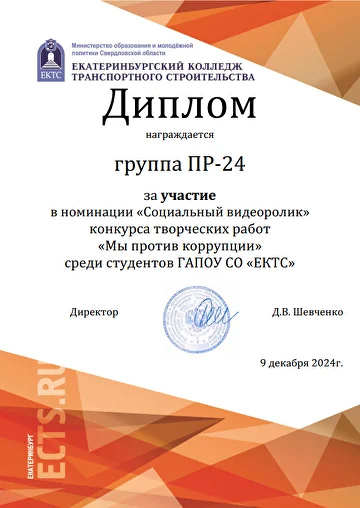
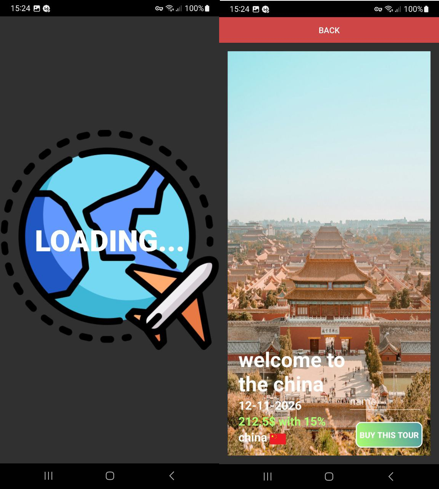
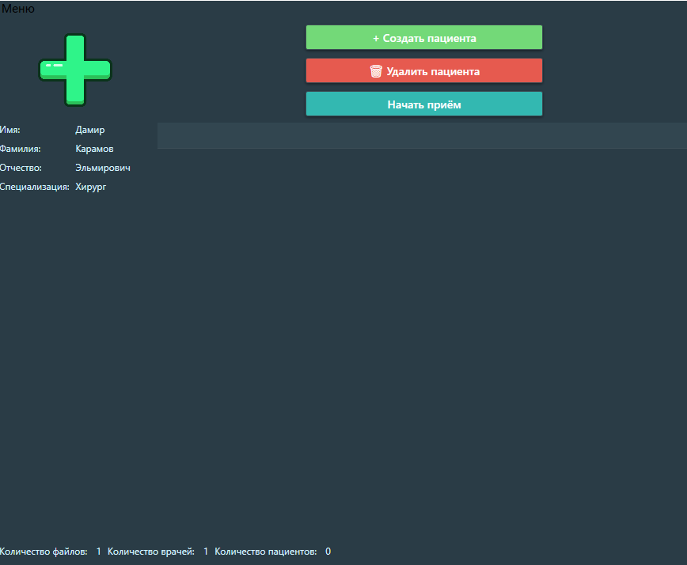
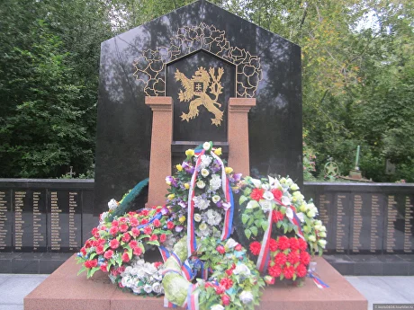

Министерство образования Свердловской области
Карамов Дамир Эльмирович
Портфолио студента специальности "Информационные системы и программирование"
Группа: ПР-31
Год: 2026
Специальность: 09.02.07
О себе
Я - студент 3 курса специпльности "Информационные системы и программирование"
Моё стремление - стать востребованным в области программирования и разрабатывать ПО для IT-компаний
Знания 📖
- Уверенное владение английским языком,
- Основные принципы ООП (Обьектно ориентированное программирование),
- Знание .NET
- Знание WPF
- Основы проектирования и работы с базами данных: MS SQL,
- Основы CMS Wordpress,
- Основы работы с API запросами в среде Android Studio,
- Использование фреймворков и библиотек,
- Тестирование приложений при помощи MSTest.


Умения 💪
- Разработка программных модулей
- Работа с системой контроля версий Git
- Проектирование и создангие баз данных MS SQL
- Разработка мобильных приложений
- Разработка Frontend для сайтов (HTML/CSS/Javascript)
Опыт 🌟
- Разработка программных модулей дял автоматизации задач с наследованием классов
- Создание веб сайта "Мои 3D модели" при помощи CMS системы WordPress
- Создание программы для учёта пациентов для врачей на WPF
- Создание мобильного приложения "Tour Agency"
- Разработка баз данных
Личные качества ✨
- Ответственность
- Целеустремлённость
- Усидчивость
- Внимательность
- Готовность работать в команде
- Постоянное саморазвитие
Профессиональные компетенции
Перечень общих (ОК), профессиональных (ПК) и дополнительных профессиональных (ДПК) компетенций по специальности 09.02.07 "Информационные системы и программирование":Общие компетенции (ОК)
- ОК 01 Выбирать способы решения задач профессиональной деятельности применительно к различным контекстам
- ОК 02 Использовать современные средства поиска, анализа и интерпретации информации и информационные технологии для выполнения задач профессиональной деятельности
- ОК 03 Планировать и реализовывать собственное профессиональное и личностное развитие, предпринимательскую деятельность в профессиональной сфере, использовать знания по правовой и финансовой грамотности в различных жизненных ситуациях
- ОК 04 Эффективно взаимодействовать и работать в коллективе и команде
- ОК 05 Осуществлять устную и письменную коммуникацию на государственном языке Российской Федерации с учетом особенностей социального и культурного контекста
- ОК 06 Проявлять гражданско-патриотическую позицию, демонстрировать осознанное поведение на основе традиционных российских духовно-нравственных ценностей, в том числе с учетом гармонизации межнациональных и межрелигиозных отношений, применять стандарты антикоррупционного поведения
- ОК 07 Содействовать сохранению окружающей среды, ресурсосбережению, применять знания об изменении климата, принципы бережливого производства, эффективно действовать в чрезвычайных ситуациях
- ОК 08 Использовать средства физической культуры для сохранения и укрепления здоровья в процессе профессиональной деятельности и поддержания необходимого уровня физической подготовленности
- ОК 09 Пользоваться профессиональной документацией на государственном и иностранном языках
Профессиональные компетенции (ПК) - Разработка программных модулей
- ПК 1.1. Формировать алгоритмы разработки программных модулей в соответствии с техническим заданием
- ПК 1.2. Разрабатывать программные модули в соответствии с техническим заданием
- ПК 1.3. Выполнять отладку программных модулей с использованием специализированных программных средств
- ПК 1.4. Выполнять тестирование программных модулей
- ПК 1.5. Осуществлять рефакторинг и оптимизацию программного кода
- ПК 1.6. Разрабатывать модули программного обеспечения для мобильных платформ
Профессиональные компетенции (ПК) - Разработка и отладка программного обеспечения
- ПК 2.1. Разрабатывать требования к программным модулям на основе анализа проектной и технической документации на предмет взаимодействия компонент
- ПК 2.2. Выполнять интеграцию модулей в программное обеспечение
- ПК 2.3. Выполнять отладку программного модуля с использованием специализированных программных средств
- ПК 2.4. Осуществлять разработку тестовых наборов и тестовых сценариев для программного обеспечения
- ПК 2.5. Производить инспектирование компонент программного обеспечения на предмет соответствия стандартам кодирования
Профессиональные компетенции (ПК) - Сопровождение программного обеспечения
- ПК 4.1. Осуществлять инсталляцию, настройку и обслуживание программного обеспечения компьютерных систем
- ПК 4.2. Осуществлять измерения эксплуатационных характеристик программного обеспечения компьютерных систем
- ПК 4.3. Выполнять работы по модификации отдельных компонент программного обеспечения в соответствии с потребностями заказчика
- ПК 4.4. Обеспечивать защиту программного обеспечения компьютерных систем программными средствами
- ПК 4.5. Администрировать базы данных
- ПК 4.6. Защищать информацию в базе данных с использованием технологии защиты информации
Достижения
Грамоты

.webp)
Документы
Оценки экспертов
Эксперт 1
Оценка
Эксперт 2
Оценка
Эксперт 3
Оценка
Работы

Мобильное приложение Tour Agency
Создано во время учебной практики, наличие базы данных ROOM, наглядной работы с API и дизайном приложения
Подробнее

Система приёмов для врачей
Создана в процессе учёбы, благодаря этой системе можно вести учёт пациентов, проводить приёмы, ставить диагнозы и входить в аккаунт
ПодробнееЯ гражданин

Поход на михайловское кладбище
Я Вместе со своей группой посетили памятники героям Великой Отечественной Войны